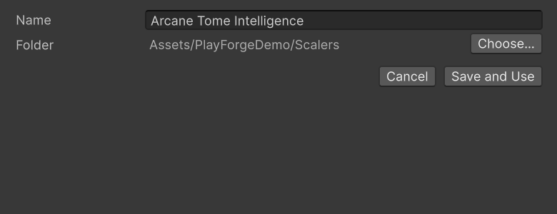
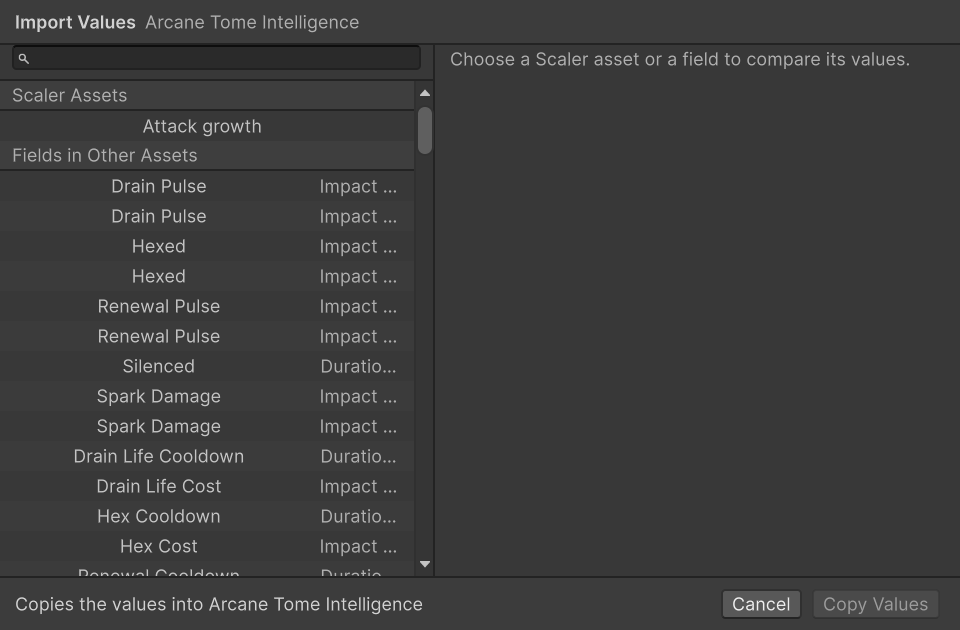
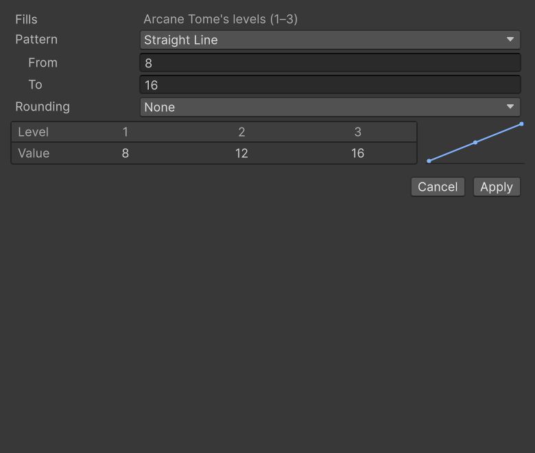

Its windows
The field menu opens three windows: Save as Scaler Asset, Import Values and Quick Fill.
Save as Scaler Asset
Save as Scaler Asset (SaveScalerAssetWindow) saves the field's scaler as a Scaler asset, and makes the field share
it. It waits for one selected asset.

Save as Scaler Asset.
| Control | What it does |
|---|---|
| Name | The Scaler asset's name. It starts as the asset's and the field's, such as "Burning Duration". |
| Folder | The Scaler type's folder in the active project. Choose… changes it. |
| Save and Use | Saves the field's scaler as a Scaler asset, and makes the field share it. |
Import Values
Import Values (ScalerValuesWindow) copies values per level into the field.

Import Values, listing the Scaler assets and fields to copy values from.
- Choose Import Values… in the field menu.
- Pick a source. The window lists the active project's Scaler assets, then the fields of its other assets with values per level.
- Compare its values with the field's, level by level, with both curves.
- Select Copy Values. It copies them as one Undo step.
Quick Fill
Quick Fill (QuickFillWizard) fills the field's values, or the points of one spread over levels, from a pattern.

Quick Fill, spreading a straight line over the field's levels.
| Setting | Options |
|---|---|
Pattern, a QuickFillWizard.EFillPattern |
Same Value, Straight Line, Slow Then Fast, Fast Then Slow, Steps, Add Each Level, Multiply Each Level, Ease In and Out or Custom Curve. |
Rounding, a QuickFillWizard.ERounding |
None, Whole Numbers or Nearest Step. |
A preview shows the values as the table will, with their curve. Apply writes them as one Undo step.
Number field actions in code
ScalerActions does in code what the kind menu and the field menu do. Each call is one Undo step that reaches every
selected asset: SetKind, MakeConstant, CanMakeConstant, UseScalerAsset, SaveAsScalerAsset and CopyValues.